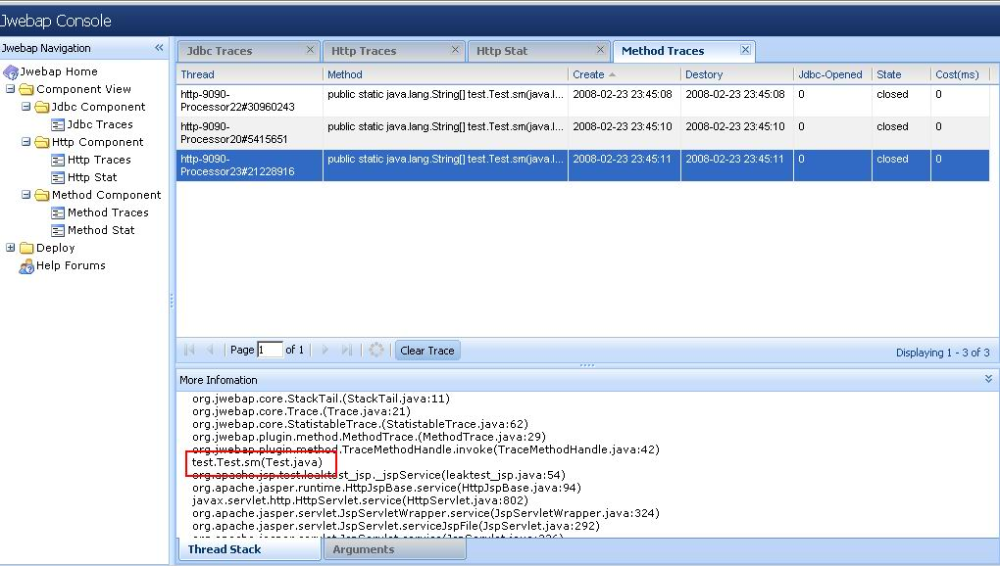

介绍
Jwebap是一个用于java web application 的profiler工具。 它不采用JVMPI提供的特性实现监控， 是一个纯粹的JAVA应用，不依赖于OS，JVM，JDK1.4以上用户都可以使用。 同时，它还非常易于使用简单的部署好jar包以后，所有的配置都在 控制台 完成。下面是它的一些特性：
高效:
执行非常高效，几乎不给系统带来更多的开销，目前已经应用于中国电信数个省级大型业务系统。
纯Java实现: Jwebap是纯java应用，可以方便的部署于JDK14和以上，各种中间件环境。
Plugin架构:基于plugin架构进行扩展，所有的功能都是通过plugin方式加入，方便按需使用和加载，默认提供Tracer监控插件，完成对J2ee应用的监控，包括，连接池，SQL，方法调用，业务请求等方面。
使用简单: 部署非常简单，对系统没有任何侵入，只需部署完jar包和web.xml后，一切的配置交给控制台完成。
点击此处 下载
快速入门
第一步：部署
1) 把Jwebap_*.*.*_*.jar放到应用的ClassPath下。 如果你是EJB应用并且需要监控EJB的话，需要放到server lib下。 2) 把jwebap.xml放到工程web module任意目录中，一般可以放在WebRoot/WEB-INF/目录下。
第二步：配置
修改你应用的（如果没有的话可以新建一个空的WebModule和EJB放在一个EAR中）web.xml:
增加context-param指定jwebap.xml
的路径
<context-param> <param-name>jwebap-config</param-name> <param-value>/WEB-INF/jwebap.xml</param-value> </context-param>
增加Jwebap启动Listener（建议放在所有Listener之前）
<listener> <listener-class>org.jwebap.startup.JwebapListener</listener-class> </listener>
为Tracer插件增加Filter
<filter> <filter-name>PageDetectFilter</filter-name> <filter-class>org.jwebap.plugin.tracer.http.DetectFilter</filter-class> <init-param> <param-name>excludeUrls</param-name> <param-value>/detect;/detect/*;*.js;*.jpg;*.htm;*.html;*.gif;*.png;*.css;*.swf</param-value> </init-param> </filter> <filter-mapping> <filter-name>PageDetectFilter</filter-name> <url-pattern>/*</url-pattern> </filter-mapping>
增加Jwebap控制台Servlet
<servlet> <servlet-name>detect</servlet-name> <servlet-class>org.jwebap.ui.controler.JwebapServlet</servlet-class> </servlet> <servlet-mapping> <servlet-name>detect</servlet-name> <url-pattern>/detect/*</url-pattern> </servlet-mapping>
第三步：启动！
部署Tracer插件jar包tracer.jar在你应用的类路径下，一般和jwebap的jar包在一起。然后启动应用！如果部署正确的话，输入
JwebapServlet 对应的地址，就可以看到Jwebap控制台。
第四步：配置tracer插件参数
进入
Jwebap控制台，进入deploy菜单，默认已经帮你添加了Tracer插件，不过你还需要根据实际情况配置Tracer插件的参数：
点击'Tracer'，点击具体的组件(Component)进行参数配置 :
HttpComponent
<component name="HttpComponent" type="org.jwebap.plugin.http.HttpComponent"> <!--(ms) timings filter's over time --> <property name='trace-filter-active-time'>-1</property> <!-- max over-time trace size --> <property name='trace-max-size'>1000</property> </component>
MethodComponent
<component name="MethodComponent" type="org.jwebap.plugin.method.MethodComponent"> <property name='trace-filter-active-time'>-1</property> <property name='trace-max-size'>1000</property> <!-- package name and class name that monitored by MethodComponent, e.g.: 'test.*;test.Test' , divided by ';' --> <property name='detect-clazzs'>test.*;</property> </component>
JdbcComponent
<component name="JdbcComponent" type="org.jwebap.plugin.jdbc.JdbcComponent"> <property name='trace-filter-active-time'>-1</property> <property name='trace-max-size'>1300</property> <property name='connection-listener'><!--Connection Listener--> org.jwebap.plugin.http.ServletOpenedConnectionListener; org.jwebap.plugin.method.MethodOpenedConnectionListener </property> <!-- 1)Local datasource: set your ConnectionManagerClass, or the connection pool 's datasource. If you have more than one class ,divided by ';'. c3p0:com.mchange.v2.c3p0.ComboPooledDataSource; dbcp: org.apache.commons.dbcp.BasicDataSource Also,other class. Jwebap will inject driver-clazzs,and detect any connection and datasource object it's method renturn. Note: 'driver-clazzs =jdbc driver' is deprecated. Beacause of connection pool, set 'driver-clazzs =jdbc driver', jwebap will find out all connection is leaked. 2)JNDI datasource: If your application uses jndi datasource, you can set the class which manages connections in your application as driver,e.g.: 'com.china.telecom.ConnectionManager'. Else if you use spring to get jndi datasource ,you also can set driver-clazzs=org.springframework.jndi.JndiObjectFactoryBean. JdbcComponent will inject this class to proxy all connection the class's method return. --> <property name='driver-clazzs'></property> </component>
界面截图
Jdbc Traces


Method Traces


{kind=link}
{kind=link}
Please use
SourceForge forum
for reporting any bug, comment or suggestion.
Power by